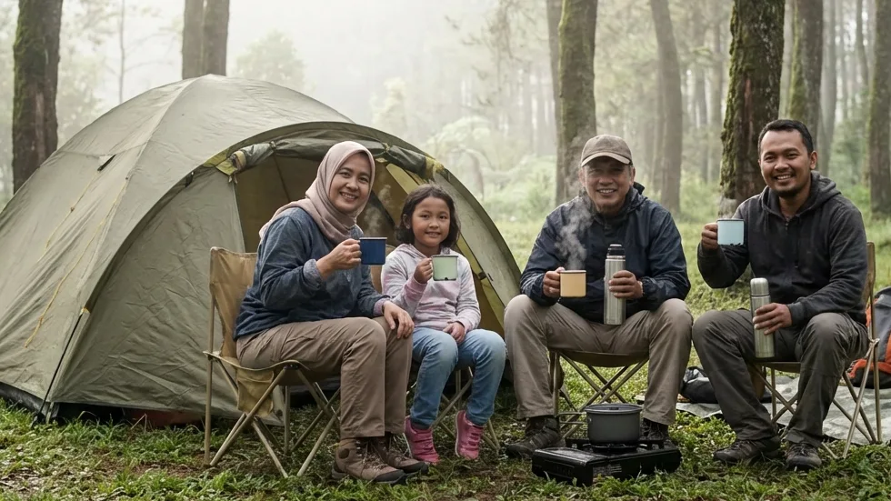

1. Keinginan Berkemah vs Fakta Mahalnya Harga Peralatan
Keinginan untuk menepi dari keramaian dan tidur di bawah langit yang dipenuhi bintang adalah impian bagi banyak warga perkotaan. Media sosial, khususnya Instagram dan TikTok, setiap harinya dibombardir dengan konten-konten estetik tentang keseruan menyeduh kopi di depan tenda, melihat lautan awan, hingga merekam time-lapse sunrise (matahari terbit) di puncak pegunungan. Namun, bagi wisatawan pemula atau keluarga muda yang baru ingin mencoba aktivitas ini, ada sebuah tembok besar yang kerap menghalangi niat tersebut: mahalnya modal untuk membeli peralatan berkemah (camping gears).
Jika Anda mendapati diri Anda berada dalam situasi dilematis ini—ingin menikmati syahdunya alam namun enggan menguras tabungan untuk membeli tenda dan perlengkapan lainnya—maka Anda sedang membaca artikel yang teramat sangat tepat. Penelusuran mengenai Panduan Sewa Tenda Glamping: Solusi Liburan Estetik Tanpa Perlu Keluar Modal Beli Perlengkapan akan membuka wawasan Anda tentang sebuah konsep liburan revolusioner yang dikenal sebagai Comfort Camping. Melalui panduan mendalam ini, kita akan membongkar rahasia bagaimana Anda bisa menikmati kemewahan dan kenyamanan ala glamping hanya dengan menyewa tenda dome biasa yang dikelola secara luar biasa profesional, lengkap dengan segala fasilitas penunjangnya.
2. Mengapa Memilih Sewa Tenda Daripada Membeli Sendiri?
Pertanyaan ini selalu menjadi perdebatan panjang. Namun, jika Anda bukanlah seorang pendaki gunung yang melakukan ekspedisi setiap minggu, menyewa adalah langkah finansial yang paling rasional.
Menghemat Biaya Secara Signifikan
Mari kita melakukan sedikit kalkulasi kasar. Untuk membeli sebuah tenda double layer berkualitas menengah yang mampu menahan hujan badai, Anda harus merogoh kocek minimal Rp 800.000 hingga Rp 1.500.000. Tambahkan lagi matras tebal (Rp 200.000), dua buah sleeping bag polar (Rp 400.000), lampu tenda, hingga kompor portabel. Total pengeluaran Anda bisa dengan mudah menembus angka Rp 2.500.000. Padahal, dengan menyewa paket tenda komplet di lokasi perkemahan, Anda hanya perlu mengalokasikan dana sekitar Rp 150.000 hingga Rp 300.000 saja per malamnya. Anda menghemat jutaan rupiah untuk sebuah kegiatan yang mungkin hanya Anda lakukan satu atau dua kali dalam setahun.
Bebas dari Perawatan dan Penyimpanan Barang
Perlengkapan outdoor menuntut perawatan yang amat cerewet. Setelah dipakai, tenda harus dijemur hingga benar-benar kering sebelum dilipat. Jika disimpan dalam keadaan lembap di lemari rumah Anda, bahan waterproof (PU) tenda akan berjamur, mengelupas (coating rusak), dan menjadi berbau apak. Menyewa membebaskan Anda dari seluruh siksaan perawatan dan keharusan menyediakan ruang penyimpanan besar di gudang rumah Anda.
BACA JUGA (Opsi Liburan Nyaman):
3. Konsep Comfort Camping: Glamping Sederhana dengan Tenda Dome
Saat Anda mencari Panduan Sewa Tenda Glamping: Solusi Liburan Estetik Tanpa Perlu Keluar Modal Beli Perlengkapan, Anda akan diperkenalkan pada sebuah format jalan tengah yang disebut Comfort Camping.
Tenda Spesifikasi Gunung yang Tangguh
Alih-alih menggunakan bangunan tenda safari raksasa layaknya glamping bertarif jutaan rupiah yang amat mewah, comfort camping tetap mempertahankan nilai otentisitas petualangan dengan menggunakan tenda dome berkapasitas 3-4 orang layaknya tenda yang sering digunakan para pendaki. Bedanya, tenda yang disewakan ini bukan tenda murahan satu lapis, melainkan tenda double layer berspesifikasi tinggi. Tenda ini dirancang secara khusus untuk menghadapi cuaca ekstrem, di mana jaring udara di bagian dalam (inner) dipisahkan dengan kain payung luar (flysheet) sehingga tidak akan ada embun kondensasi yang menetes ke wajah Anda saat terlelap di malam hari.
Fasilitas Tidur Lengkap (Matras dan Sleeping Bag)
Anda tidak akan dibiarkan tidur beralaskan punggung yang membentur bebatuan tanah. Dalam penyewaan tenda gaya baru ini, pihak operator telah menyusun lantai tenda dengan matras penahan dingin berlapis aluminium foil, ditambahkan dengan matras spons yang tebal dan empuk. Setiap peserta juga langsung dibekali dengan sleeping bag (kantong tidur) berbahan polar atau dacron yang dijamin telah dicuci wangi, menjaga suhu tubuh Anda tetap hangat layaknya sedang tidur di kasur rumah sendiri.

Bentuk nyata dari layanan penyewaan tenda Comfort Camping: tenda dome kokoh yang telah didirikan secara rapi lengkap dengan lapisan anti-hujan, sehingga tamu bisa langsung beristirahat. (Dokumentasi: Batu Sunrise Camp)4. Keuntungan Menggunakan Layanan Sewa Tenda All-In
Selain menghemat jutaan rupiah, menyewa paket All-In (terima beres) pada operator penyedia jasa akan melipatgandakan indeks kebahagiaan liburan Anda.
Set-up Terima Beres (Anti-Ribet)
Membaca lembar manual panduan cara merakit tiang rangka fiberglass tenda di tengah tiupan angin kencang adalah sebuah mimpi buruk. Saat Anda menyewa paket All-In, Anda secara harfiah membayar untuk sebuah kepraktisan mutlak. Tim crew lapangan dari pihak operator telah mendirikan tenda tersebut berjam-jam sebelum Anda tiba. Ketika kendaraan Anda terparkir, tenda Anda telah berdiri tegak dan siap pakai. Anda hanya perlu menurunkan koper pakaian dan langsung bersantai menyesap kopi hangat.
Dukungan Fasilitas Toilet Bersih dan Listrik
Jika Anda berkemah liar di gunung, Anda tidak akan menemukan stop kontak listrik atau toilet. Namun, pengelola ground camping sewaan masa kini mengintegrasikan fasilitas layaknya hotel. Di samping tenda Anda, telah dipasang instalasi kabel listrik yang aman untuk Anda gunakan mengisi daya ponsel (charging) semalaman. Lebih melegakan lagi, Anda mendapat akses tanpa batas menuju blok fasilitas MCK berupa toilet duduk permanen bersistem flushing yang bersih, terang, dan seringkali dilengkapi dengan pemanas air (water heater).
5. Panduan Memilih Penyedia Sewa Tenda di Batu Malang
Menjamurnya bisnis persewaan tenda di dataran tinggi Batu mengharuskan Anda untuk lebih selektif dan waspada agar liburan tidak berujung mengecewakan.
Transparansi Harga dan Paket
Pilihlah pengelola yang mencantumkan rincian harga secara jujur dan transparan di awal. Waspadai promosi harga sewa tenda yang terlalu murah (misal 50 ribu per malam), karena biasanya harga tersebut hanya untuk "kain tenda kosong" saja. Saat Anda meminta matras, lampu, atau izin memakai toilet, Anda akan ditagih biaya tambahan (hidden fee) yang bila ditotal akan menjadi jauh lebih mahal. Pastikan paket yang Anda pilih benar-benar mencakup seluruh instrumen kenyamanan dasar.
Lokasi Strategis dengan Pemandangan Alam
Tenda yang bagus akan percuma jika didirikan di lokasi yang menghadap ke arah dinding tebing. Mintalah jaminan dari pihak pengelola bahwa kapling tenda sewaan Anda didirikan di area dengan pandangan bebas (clear line of sight) yang menghadap langsung ke arah hamparan alam terbuka, bukan berada di belakang tumpukan tenda wisatawan lainnya.
6. Rekomendasi Terbaik: Batu Sunrise Camp
Jika Anda masih kebingungan dalam menentukan pilihan, maka penelusuran kami sangat merekomendasikan destinasi wisata perkemahan yang bernama Batu Sunrise Camp yang berlokasi di perbukitan asri Kota Batu.
Harga Bersahabat dengan Fasilitas VIP
Batu Sunrise Camp adalah operator yang sangat memahami filosofi Comfort Camping. Mereka menyewakan paket All-In di mana tenda gunung berukuran besar sudah dirakit sempurna lengkap dengan lapisan lantai spons tebal dan sleeping bag polar. Fasilitas sanitasinya merupakan salah satu yang paling bersih dan higienis di wilayah Malang Raya, ditambah dengan penempatan colokan listrik yang tertutup aman dari hujan di tiap area tenda, membuat pengalaman Anda terasa semewah glamping namun dengan tarif harga yang sangat merakyat.
Pemandangan Sunrise dan City Light
Lokasi ini mendapatkan gelar "VIP" berkat orientasi geografisnya. Tenda-tenda sewaan di sini ditempatkan menghadap lurus ke arah timur. Di malam hari yang damai, Anda dan keluarga bisa duduk bersantai di depan tenda sambil menikmati lautan lampu kota (City Lights) yang gemerlap tanpa terhalang apa pun. Saat subuh menjelang, Anda tidak perlu lagi bersusah payah mendaki bukit; piringan matahari keemasan (Golden Sunrise) yang menyibak kabut lembah akan muncul tepat di depan mata Anda layaknya sebuah lukisan hidup.
7. Tips Persiapan Sebelum Berangkat Comfort Camping
Walaupun Anda tidak perlu membawa peralatan tenda sama sekali, Anda tetap diwajibkan melakukan persiapan pribadi (personal gear) agar kondisi fisik Anda tidak tumbang saat diserang suhu dingin.
Membawa Pakaian Hangat (Layering System)
Berada di ketinggian ribuan MDPL berarti Anda harus siap menghadapi hawa beku. Terapkanlah 3-Layering System untuk pakaian Anda. Gunakan kaus berbahan dry-fit di lapisan dalam untuk membuang uap keringat, lapisi dengan jaket fleece (polar) hangat di tengah, dan bungkus tubuh Anda menggunakan jaket windbreaker (parasut) tebal sebagai pelindung terluar untuk menangkis hembusan angin. Amankan juga area telinga Anda dengan kupluk (beanie) serta gunakan kaus kaki ekstra tebal.
Membawa Perbekalan Pribadi
Bawalah kompor gas portabel berbahan bakar gas kaleng beserta alat masak simpel (nesting) jika Anda ingin merebus air untuk membuat kopi panas atau memanggang daging di malam hari. Jangan lupa mengemas tas kotak P3K (First Aid Kit) kecil yang berisi obat pereda demam, minyak kayu putih, dan obat pribadi Anda untuk mengantisipasi kejadian darurat yang tak terduga.
BACA JUGA (Kenyamanan Berkemah):
8. Kesimpulan
Tidak ada lagi alasan bagi Anda untuk menunda kerinduan berlibur dan menyatu dengan alam. Melalui pembedahan komprehensif pada topik Panduan Sewa Tenda Glamping: Solusi Liburan Estetik Tanpa Perlu Keluar Modal Beli Perlengkapan ini, kita belajar bahwa kebahagiaan dan healing tidak selamanya menuntut Anda untuk menguras tabungan membeli tenda mahal atau menyewa resort bintang lima. Dengan memanfaatkan jasa penyewaan Comfort Camping berkonsep All-In di pengelola profesional layaknya Batu Sunrise Camp, Anda bisa menikmati indahnya *sunrise*, segarnya hawa pegunungan, serta amannya akses kelistrikan dan toilet bersih dengan harga yang teramat murah. Kemasi pakaian hangat Anda sekarang, hubungi admin reservasi, dan biarkan diri Anda dimanjakan oleh kemegahan alam Kota Batu akhir pekan nanti!